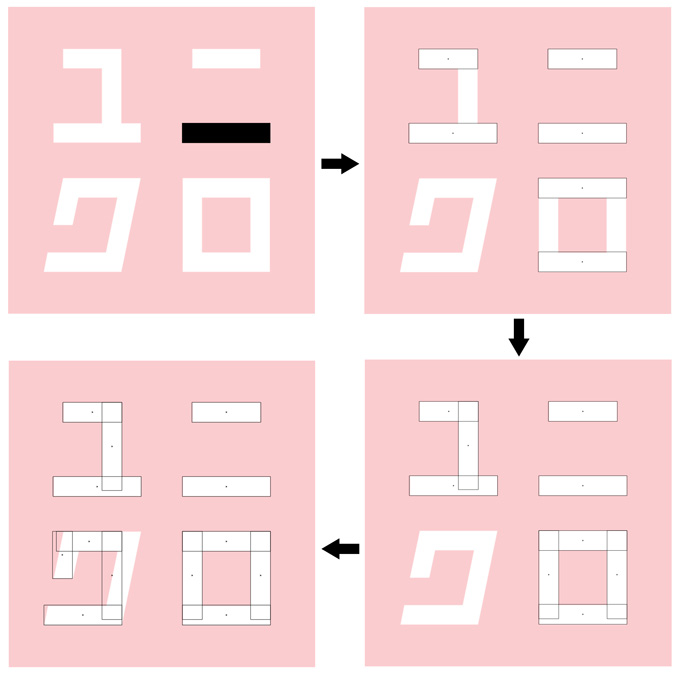
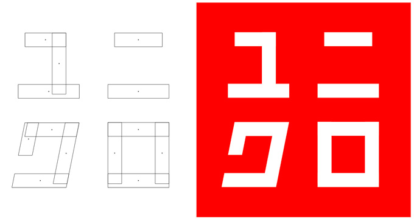
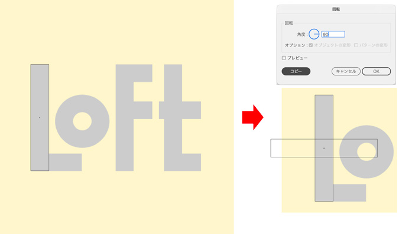
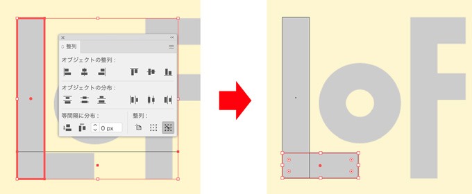
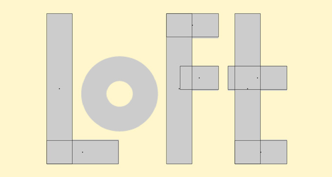
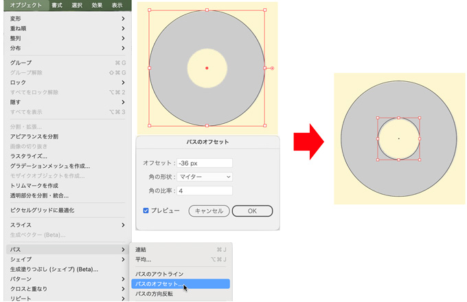
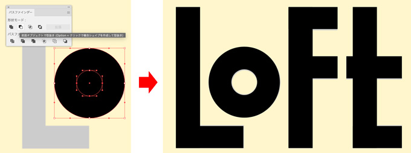
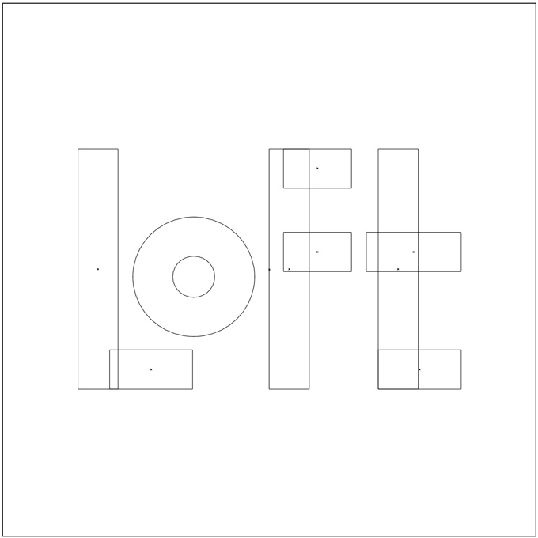
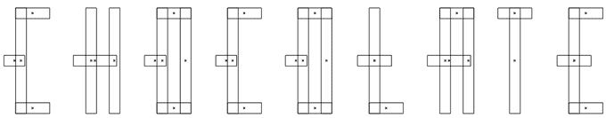

トレースでロゴを描く
- 目的は、直線・曲線の練習（実際のロゴをトレースして規則性を実感しましょう）
- トレース演習
- 配置した画像のレイヤーを「テンプレート」にする
- 新規レイヤーを作成してロゴを描画する
例１ ユニクロ
- デザインの「ユニット」を決める（基準になるオブジェクト）
- ユニットが描画できたら、それを移動コピーして大きさを整える
- 回転コピーでユニットの逆方向も作成
- キーオブジェクトに整列で基準の長方形に整える
- 斜めの長方形は、シアーツールで傾きを一定にするか、ダイレクト選択ツールで動かさない辺の反対側のセグメントのみつかんで移動させる
※作業は「アウトライン」と「プレビュー」を交互に確認する

- 長方形を描いて背景色を赤に設定（重ね順→最背面に）

例２ LOFT
  
- 「パス」→「パスのオフセット」

- 「パスファインダー」→「前面オブジェクトで型抜き」
 
例３ CHOCOLATE
